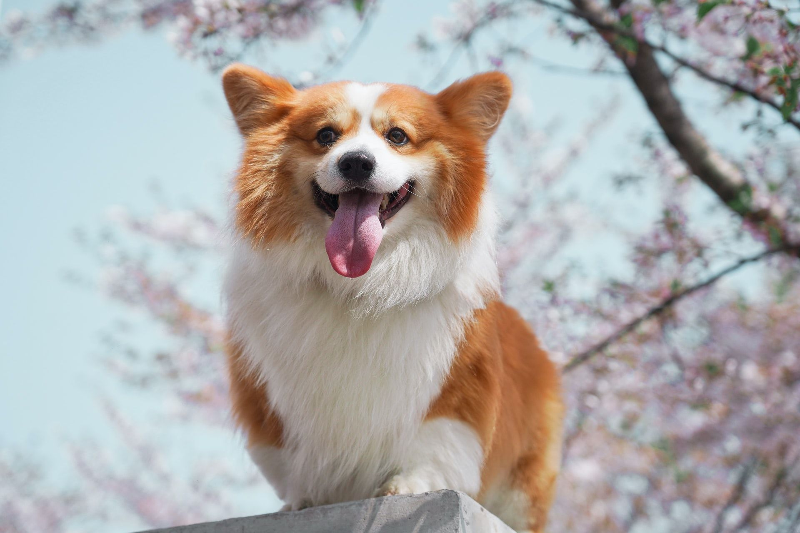
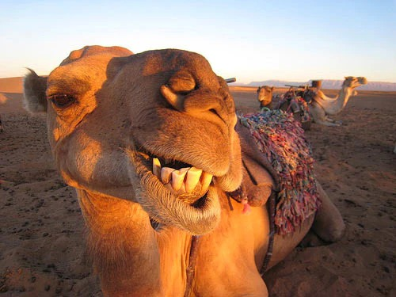
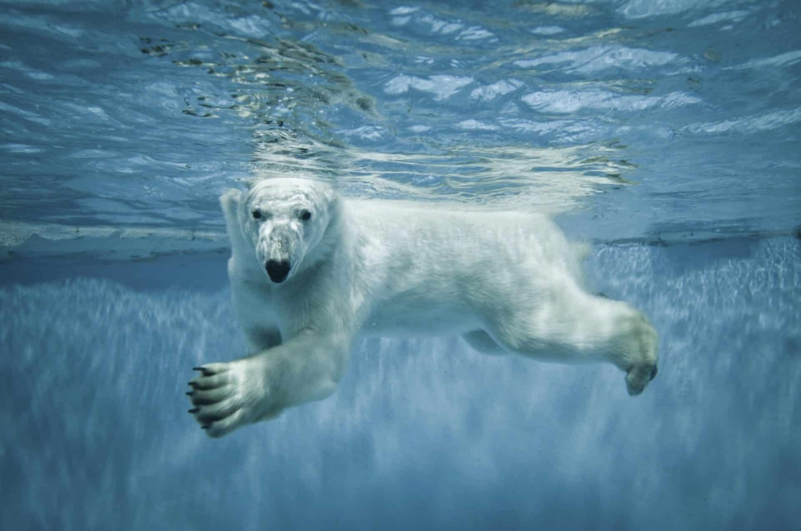
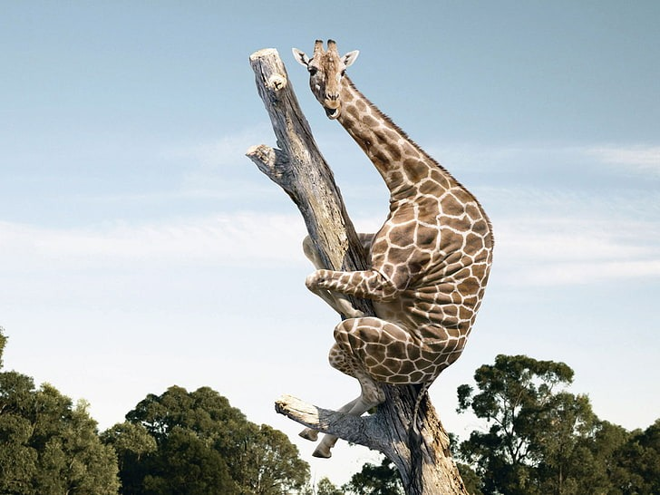
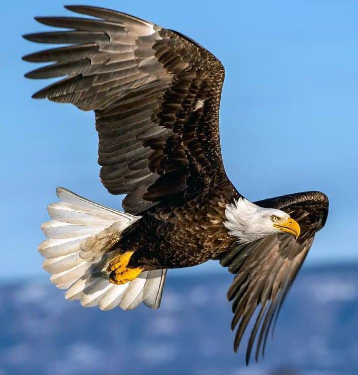
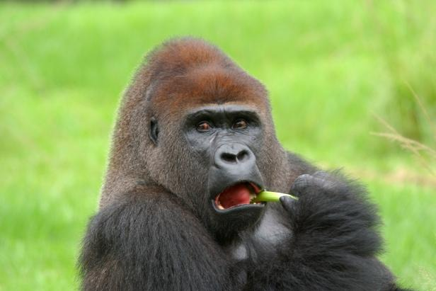
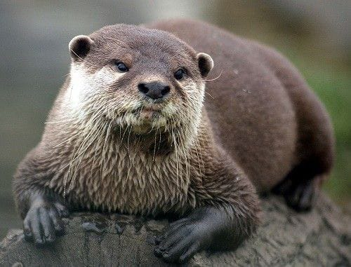
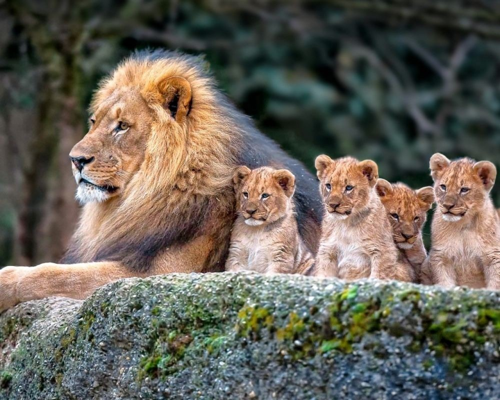
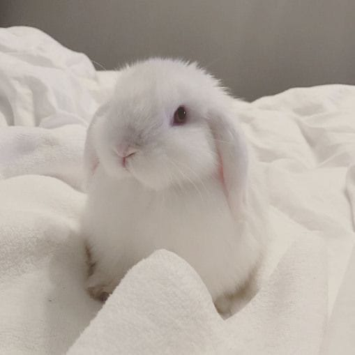

Hewan - hewan memiliki banyak fakta yang menarik ( ͡> ͜ʖ ͡<).
Dari pada membunuh dan menyiksa mereka, apakah tidak jauh lebih baik untuk memelihara mereka ? Bila mereka bisa berbicara
pastinya mereka akan berkata, aku salah apa sama kamu? kenapa membunuhku? （◞‸◟)
Kita memerlukan hewan-hewan untuk dijadikan sebagai teman juga. Banyak kabar yang beredar bahwa bermain dengan binatang meredakan stress,
jadi untuk apa menyiksa mereka dengan begitu kejam? Website ini akan membuktikan bahwa hewan memiliki hal unik yang perlu dilindungi
Anjing

- Anjing-anjing mampu mengetahui letak sumber suara dalam 6/100 detik dengan menggunakan telinga mereka yang seperti piringan radar.
- Anjing memiliki indera penciuman yang merupakan salah satu yang paling tajam di alam.
- Mamalia yang memiliki kelenjar prostat hanya ada 2, yaitu manusia dan anjing.
- Laika adalah seekor anjing yang menjadi astronot luar angkasa pertama di dunia. Anjing betina ini dikirim ke luar angkasa di dalam satelit bumi buatan di tahun 1957 oleh pemerintah Rusia.
- Anjing memiliki kebiasaan melingkarkan ekornya untuk menutupi hidungnya. Mereka melakukan itu untuk menjaga hidungnya tetap hangat saat cuaca dingin.
Unta

- Unta dapat memakan Kaktus
Kemampuannya untuk makan kaktus yang dipenuhi duri tajam. Karena kaktus seringkali adalah satu-satunya sumber makanan di area gurun pasir, maka kemampuan tersebut sangat vital bagi mereka.
- Unta memiliki daya tahan tubuh yang Kuat
Saat kekurangan air, unta juga bisa mengurangi volume urinnya hingga hanya seperlima volume normal. Kotoran mereka pun sangat kering, sampai-sampai gembala unta bisa menggunakan kotorannya itu untuk bahan bakar api unggun. Dan saat bertemu sumber air, tubuhnya sanggup menyerap hingga lebih dari 100 liter air hanya dalam 5-10 menit!
Badak
Badak memiliki penglihatan yang baik terhadap benda yang jaraknya dekat. Namun untuk benda yang jaraknya jauh, penglihatan mereka buruk. Jika kamu bertemu dengan badak, binatang ini tidak akan mampu melihatmu jika berada dalam jarak jauh. Tetapi kamu harus berhati-hati, badak sensitif terhadap suara
Beruang Kutub

- Beruang Kutub Bersifat Kanibal
Beruang kutub adalah hewan karnivora yang menjadikan anjing laut sebagai makanan utamanya. Namun jika anjing laut sedang sulit ditemukan, beruang kutub juga mau memakan hewan apapun yang bisa didapatnya. Selama beberapa tahun terakhir, perubahan iklim dan melelehnya lapisan es Kutub Utara turut berdampak pada berubahnya perilaku makan beruang kutub. Saat anjing laut kian sulit didapat, beruang kutub pun mulai beralih mengkonsumsi makanan alternatif semisal telur burung laut.
Jerapah

- Jerapah adalah hewan darat tertinggi di dunia. Tingginya bisa mencapai 5,7 meter.
- Sama seperti sidik jari manusia, motif tutul pada jerapah tidak pernah sama. Walaupun hanya satu atau dua jerapah, motifnya tetap tidak akan pernah sama.
- Jantung jerapah berbeda dengan hewan lainnya. Jantung jerapah harus mampu memompa darah melalui lehernya yang panjang menuju ke kepalanya. Karena itu, jantung jerapah beratnya mencapai 10 kg.
- Selain lehernya, lidah jerapah juga panjang. Lidah jerapah panjangnya bisa mencapai 45 cm.
Elang

- Mata elang empat kali lebih tajam
- Burung elang sanggup terbang dengan kecepatan mengcapai 300 kilometer/ jam. Itu artinya, kecepatan terbang Elang sama seperti kecepatan motor sport 1000cc punya Valentino Rossi.
- Elang menjadi hewan yang terancam punah karena memang mereka bertelur hanya sekali dalam setahun. Itupun tidak banyak, 1-3 butir. Yang lebih nahas lagi adalah belum tentu hidup. Karena rawan dimakan ular telurnya.
- Dalam perkawinan, Elang itu menganut sistem monogami. Artinya, Elang hanya memiliki satu pasangan hidup.
Gorila

- Hidung tiap gorila memiliki pola kerutan yang berbeda nan unik, dikenal sebagai cetakan hidung. Staf konservasi menggunakan foto dan sketsa hidung gorila untuk melacak tiap individu
- Gorila membuat bunyi ‘humming’ dan seakan menyanyi ketika sedang memakan makanan yang disukai, sama seperti manusia membuat bunyi ‘mmm’ apabila menikmati makanan lazat.
- Gorila adalah hewan bijak yang bersifat tenang dan lembut, dan kebiasaannya pemalu
- Seekor gorila bebas untuk menghentak dadanya jika ia rasa ia mahu. Hentakan dada (chest pounding) bukanlah hanya sekadar menunjukkan agresif dirinya terhadap lawan, malah pernah direkodkan gorila menghentak dada secara suka-suka (saat tiada ancaman) apabila didekati pengkaji atau ketika sedang bermain.
Kuda Nil

- Kuda Nil adalah ‘Pembunuh’
Kuda nil adalah salah satu hewan paling mematikan di Afrika. Tiap tahun, diperkirakan lebih dari 300 korban meninggal akibat hewan ini. Sumber lain mengatakan 500 korban tiap tahun.
- Kuda Nil Dapat Berlari Kencang
Mereka bisa berlari 28-30 km/jam. Dengan kecepatan tersebut, tidak mengherankan jika kuda nil mampu mengejar dan membunuh manusia.
- Kuda Nil Hanya ‘Menguap’ di Air
Karena kuda nil lebih sering menghabiskan waktu di air, itulah mengapa kuda nil hanya ‘menguap’ di air atau di sekitar air. Tidak hanya itu, mereka juga kerap ‘mendengus’ untuk memberikan peringatan agar kamu atau kuda nil lain tidak mendekat.
Berang - Berang

- Berang-berang menyelam dengan kacamata renang yang terdiri dari satu set kelopak mata transparan sehingga bisa melihat di bawah air
- Berang-berang adalah makhluk hidup kedua setelah manusia yang mampu memanipulasi lingkungannya, yaitu salah satunya dengan membuat bendungan besar
- Rumah berang-berang dibuat dari ranting dan lumpur dengan bentuk kubah, lengkap dengan lubang masuk bawah airnya
- Berang-berang tahan dengan dingin, bahkan bisa bertahan di kolam yang tertutup lapisan es
- Berang-berang adalah salah satu hewan pengerat terbesar dengan gigi besar yang tak berhenti tumbuh
- Mereka menggerogoti kayu agar giginya tak tumbuh terlalu panjang
Singa

- Singa memiliki raungan paling keras dari semua golongan kucing besar. Saat mengaum dapat didengar sejauh 5 km
- Singa betina kadang menangkap hewan kecil hidup-hidup supaya anaknya bisa belajar berburu.
Cara singa betina mengajar anaknya berburu ternyata cukup unik. Dilansir laman Marataba, singa betina akan menangkap hewan kecil hidup-hidup, misalnya seekor impala, lalu membiarkan anak-anaknya belajar cara menangkap dan menggigit mangsa dengan benar.
- Lebih dari setengah makanan singa yaitu bangkai
Singa memang terkenal sebagai hewan buas yang jago berburu. Namun, dikutip dari Macro Evolution, ternyata lebih dari setengah makanan singa justru bukan daging segar buruannya sendiri, tapi bangkai, entah bangkai hasil buruan hiena, sesama singa, atau predator lain yang hidup di Afrika.
- Singa betina punya selera soal rambut pasangannya.
Kelinci

- Giginya yang sangat Tajam
Gigi kelinci memang sangat tajam dan fantastis. Jumlah giginya ada dua puluh delapan untuk makan. Hal ini terbukti dari giginya yang dapat mengunyah makanan sebanyak seratus dua puluh kali permenit. Dengan demikian kelinci akan makan dengan cepat.
- Unta memiliki daya tahan tubuh yang Kuat
Saat kekurangan air, unta juga bisa mengurangi volume urinnya hingga hanya seperlima volume normal. Kotoran mereka pun sangat kering, sampai-sampai gembala unta bisa menggunakan kotorannya itu untuk bahan bakar api unggun. Dan saat bertemu sumber air, tubuhnya sanggup menyerap hingga lebih dari 100 liter air hanya dalam 5-10 menit!
Place For Animals